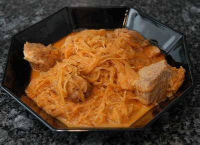

| Zutaten für 4 Personen: | |
| 600 g | Rindfleisch |
| 400 g | Sauerkraut |
| 2 | Zwiebeln |
| 1 TL | Kümmel |
| 1 TL | Dillspitzen |
| 2 TL | Rosenpaprika |
| 2 dl | Weisswein |
| 1 | Knoblauchzehe |
| 1 Likörglas | Cognac |
| 2 dl | Sauerrahm |
| Bouillon | |
| Salz | |
| Pfeffer | |
| Fett | |
Zwiebel hacken.
Fleisch in Würfel schneiden, rundum gut anbraten.
Die Zwiebeln, die zerdrückte Knoblauchzehe, Kümmel und Dill am Schluss mitdünsten. Den Paprika zuletzt beifügen, mit dem Wein ablöschen und eine Stunde schmoren lassen (20 Minuten im Dampfkochtopf).
Das Sauerkraut beifügen, evtl. etwas Bouillon beigeben, und den Cognac dazugeben. 30 Minuten köcheln lassen.
Den Sauerrahm darunter mischen und abschmecken.
Herbert Eigenmann, Code: SZG
Schmeckt ausgezeichnet. Das andere Gulaschrezept sieht hübscher aus. RE 21.10.2009
@LINKBACK_TAG@ @WAKELOCK@